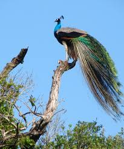
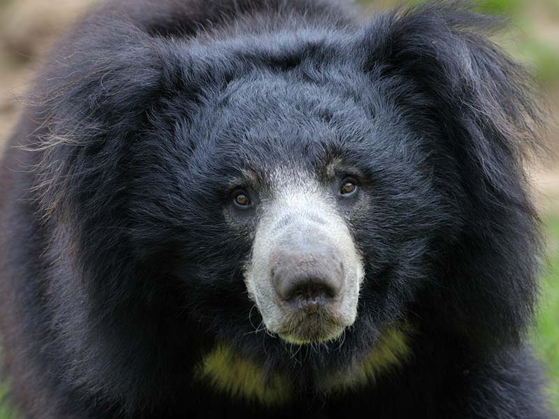
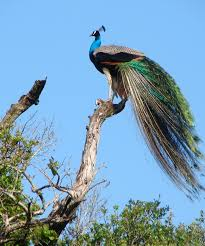
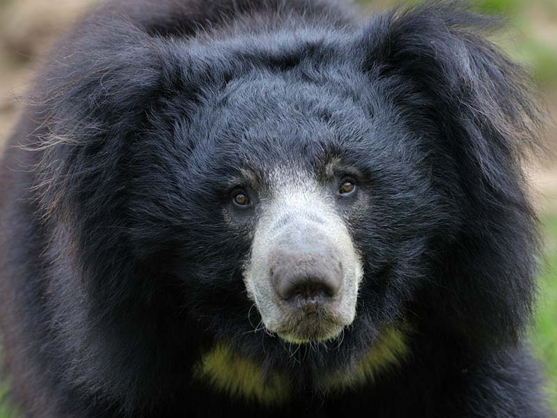

Wild Life Conservation
Welcome to Wildlife Conservation Sri Lanka, a dedicated force committed to the preservation and protection of Sri Lanka's unique and diverse ecosystems. Our organization stands at the forefront of wildlife conservation efforts, working tirelessly to ensure the sustainability of the island's rich biodiversity.
 


